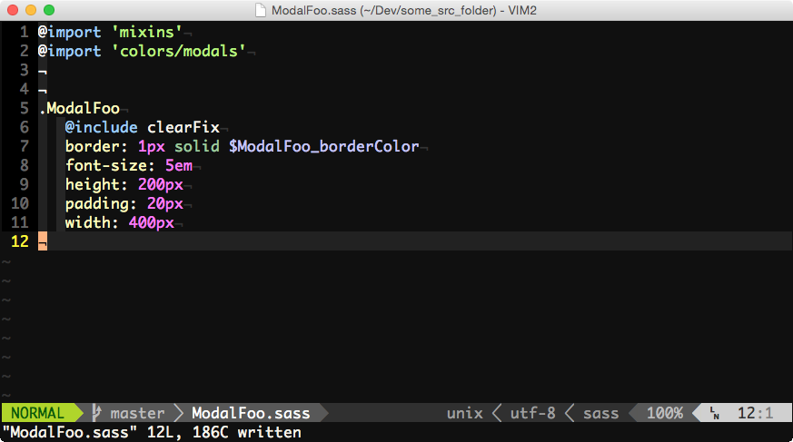

<!DOCTYPE html>
<html>
  <head>
    <title>A Whistle-Stop Tour of a Production Frontend Stack | Timecounts.org</title>
    <meta http-equiv="Content-Type" content="text/html; charset=UTF-8"/>
    <style type="text/css">

      /* ----- Fonts ----- */

      @font-face {
        font-family: Karla;
        src: url('fonts/Karla/Karla-Regular.ttf')
      }

      /* ----- Brand colors ----- */

      .tc-blue { color: #16BECC; }
      .tc-blue-fade { color: #6DD6DF; }
      .tc-navy { color: #2B497F; }
      .tc-navy-fade { color: #7D8FB0; }
      .tc-green { color: #5DC744; }
      .tc-green-fade { color: #9CDBA5; }
      .tc-soft-blue { color: #66ADC7; }
      .tc-soft-blue-fade { color: #A4D0DE; }
      .tc-warm-gray { color: #60545C; }
      .tc-warm-gray-fade { color: #ADA7AB; }
      .tc-light-gray { color: #D8D5D6; }
      .tc-light-gray-fade { color: #EBEAEA; }

      /* ----- Remark overrides ----- */

      .remark-slide-scaler {
        -moz-box-shadow: none;
        -webkit-box-shadow: none;
        box-shadow: none;
      }

      .remark-container,
      .remark-notes-area {
        background: black;
      }

      .remark-slide-content {
        padding: 1em 3em;
      }

      .remark-slide-content h1 {
        font-size: 3.0em;
        line-height: 110%
      }

      .remark-slide-content h2 {
        font-size: 2.5em
      }

      .remark-slide-content.full-code {
        padding: 0
      }

      .full-code pre {
        margin: 0
      }

      .hljs-default .coffeescript .hljs-attribute {
        color: #66ADC7
      }

      .hljs-default .hljs-literal {
        color: #7D8FB0
      }

      .hljs-default .coffeescript .hljs-property {
        color: #6DD6DF
      }

      .hljs-default .hljs,
      .hljs-default .hljs-subst,
      .hljs-default .hljs-tag .hljs-title,
      .hljs-default .nginx .hljs-title {
        color: #9CDBA5
      }


      /* ----- Timecounts styles ----- */

      body {
        font-family: Futura, 'Trebuchet MS', Arial, sans-serif;
      }

      h1, h2, h3, p {
        font-weight: normal;
        color: #60545C;
      }

      p, h3 {
        font-size: 1.8em;
      }

      a {
        color: #16BECC
      }

      strong {
        color: #16BECC
      }

      iframe {
        width: 100%;
        height: 100%;
        border: 2px solid #EBEAEA;
      }

      li, li p {
        font-size: 1.3em;
        line-height: 150%;
        color: #60545C;
      }

      li li {
        font-size: 0.9em
      }

      .aside {
        font-size: 1em;
        color: #ADA7AB

      }

      .title-page-logo {
        width: 100px;
        margin-bottom: 40px;
      }

      .timecounts-is {
        background-image: url('images/volunteers.jpg');
      }

      .so-many-files {
        width: 90%;
        display: block;
        margin: 0 auto
      }

      .ctrl-p {
        border: 1px solid white
      }

      .files {
        display: block;
        margin: 0 auto;
        width: 90%
      }

      .devtools {
        display: block;
        margin: 0 auto;
        width: 100%
      }

      .sass-modules {
        display: block;
        margin: 0 auto;
        width: 90%
      }

      .ciw-vim {
        display: block;
        margin: 0 auto;
        width: 70%;
      }

      .double-click-dev-tools {
        display: block;
        margin: 0 auto;
        width: 90%;
        margin-bottom: 1em
      }
      .bullet-train {
        background: black url('images/bullet-train.gif') top left no-repeat;
      }

      .full-screen-gif {
        background-size: cover;
      }

      .full-screen-gif h1, .full-screen-gif h2 {
        color: white !important
      }

      /* ----- Template styles ----- */

      .brown {
        background: #6F646C
      }

      .brown h1,
      .brown h2,
      .brown p,
      .brown .remark-inline-code {
        color: white
      }

      .blue {
        background: #26B9C4;
      }

      .blue h1, .blue h2, .blue h3 {
        color: white
      }

      .blue p {
        color: #2B497F;
      }

      .blue a {
        color: white;
      }

      .cover {
        -webkit-background-size: cover !important;
        -moz-background-size: cover !important;
        background-size: cover !important;
        background-position-x: center !important;
        background-position-y: center !important;
        background-repeat: no-repeat !important
      }

      /* ----- Code ----- */

      .has-code {
        background: #101010;
        padding: 0 2em
      }

      .has-code h1, .has-code h2, .has-code h3, .has-code p {
        color: #EBEAEA
      }

      .has-code li {
        color: white
      }

      .has-code .remark-inline-code {
        color: #A4D0DE
      }

      .remark-code, .remark-inline-code {
        font-family: Monaco, "Lucida Console", monospace;
        font-size: 0.8em;
      }

      .remark-inline-code {
        color: #2B497F
      }

      .zoom-code .remark-code {
        font-size: 1.1em;
      }

      .pull-left {
        float: left;
        width: 47%;
      }

      .pull-right {
        float: right;
        width: 47%;
      }

      .comment, .hljs-title {
        color: #969896;
      }

      .hljs-variable, .hljs-attribute, .hljs-tag, .hljs-regexp, .hljs-ruby .constant, .hljs-xml .tag .title, .hljs-xml .pi, .hljs-xml .doctype, .hljs-html .doctype, .hljs-css .id, .hljs-css .class, .hljs-css .pseudo {
        color: #cc6666;
      }

      .hljs-number, .hljs-preprocessor, .hljs-built_in, .hljs-literal, .hljs-params, .hljs-constant {
        color: #de935f;
      }


      .hljs-class, .hljs-ruby .class .title, .hljs-css .rules .attribute {
        color: #f0c674;
      }

      .hljs-string, .hljs-value, .hljs-inheritance, .hljs-header, .hljs-ruby .symbol, .hljs-xml .cdata {
        color: #9CDBA5 !important;
      }

      .hljs-css .hexcolor {
        color: #8abeb7;
      }

      .hljs-function, .hljs-python .decorator, .hljs-python .title, .hljs-ruby .function .title, .hljs-ruby .title .keyword, .hljs-perl .sub, .hljs-javascript .title, .hljs-coffeescript .title {
        color: #81a2be;
      }

      .hljs-keyword, .hljs-javascript .function {
        color: #7D8FB0;
        font-weight: normal !important;
      }

      .hljs-default .hljs {
        background: #101010;
        color: #c5c8c6;
        font-family: Menlo, Monaco, Consolas, monospace;
        line-height: 1.5;
        border: 1px solid #ccc;
        padding: 10px;
      }


      .hljs-default .hljs-tag,
      .hljs-default .xml .hljs-tag,
      .hljs-default .hljs-tag .hljs-title,
      .hljs-default .xml .hljs-tag .hljs-title {
        color: #66ADC7;
        font-weight: normal !important;
      }

      .hljs-default .hljs-title {
        color: #16BECC;
        font-weight: normal !important;
      }

      code, .remark-code {border: none !important}

      .hljs-default .javascript .xml {
        opacity: 1;
      }

      code .lolight,
      code .lolight * {
        color: #666 !important;
      }

      code .hilight,
      code .hilight * {
        color: #5DC744 !important;
      }


    </style>
  </head>
  <body>
    <script id="source" language="remarkjs"><!--


class: title-page, blue

# Whistle-stop tour of a frontend stack

Jof Arnold, VP Product and Frontend Dev

Timecounts.org

<div class='backbone-image cover'></div>

---

class: timecounts-is, cover

## Timecounts: a platform for building and managing communities

---

class: middle

# Goals

1. To introduce new devs an idea of what a production frontend stack might look like

2. Show what&rsquo;s worked and not worked for us

3. Learn from the audience

---

class: middle

# Follow along

[timecounts.github.io/stack-overview](http://timecounts.github.io/stack-overview)


---

class: full-screen-gif, bullet-train

## Hold on tight; there's a lot to cover!

---
class: middle, center, brown

#1. React, (C)JSX

---

class: middle

# React.js key concepts

One-way data flow (`state`, `props`)

Virtual DOM

Components


---

class: middle, has-code

### Components, props & state:
```JS
Child = React.createClass(
  render: function() {
    <div>
      Is clicked? { this.props.clicked }
    </div>
  }
);

Parent = React.createClass(
  getInititalState: function() {
    clicked: false
  },
  handleClick: function() {
    this.setState( {clicked: true} )
  },
  render: function() {
    <div>
      <div onClick={ this.handleClick }>Click Me</div>
      <Child clicked={ this.state.clicked } />
    </div>
  }
);
```

---

class: middle

# CoffeeScript sneakiness

We use CoffeeScript... And we noticed a cunning trick

---

class: middle, has-code

## Look how quick we can write code!

```CoffeeScript
{div, p} = React.DOM

MyComponent = React.createClass

  render: ->
    div className: "foo",
      div className: "sub-foo",
        p null, "Something goes here"

```

---

class: middle, has-code

## This was a mistake. Unreadable:

```CoffeeScript
{div, p} = React.DOM

MyComponent = React.createClass

  render: ->
    div className: "foo",
      div className: "sub-foo",
        if @props.flag
          for i in @props.array
            div null, "Count is #{i}"
            break if i > 10
        else
          if @props.other
            div null, "Not counting"

```

---

class: middle, left


# Instead we:

- Use (C)JSX
- Make lots and lots (ideally small) components
- Use lots of render methods if we&rsquo;re feeling lazy

---

class: middle, has-code, zoom-code

```JSX

render: function() {
  <ModalWrapper>
    <Modal>
      <Center>
        <Title>
          { this.renderTitle() }
        </Title>
        <DelayedSpinner timeout={ 1000 } />
      </Center>
    </Modal>
  </ModalWrapper>
}


```

---

class: middle, center


## Which segues nicely to:

---

class: middle, center, brown

# 2. Files and folders

---

class: middle, blue

### 100s of components, each with its own sass file:


---

class: middle, blue

## Wow that's a lot of files!

Yep, but it's not so bad: use search not file browsers:


---

class: middle

Filenames, component names, classNames all match:


---

class: middle

Easy to jump to components/styles from the names/classes in React/Chrome dev tools


---

class: middle

### Sounds like a lot of work? Not really:
- Keeping classNames and filenames in sync: `bufdo`/`argdo`/`Rename`
- Finding files amongst the clutter: `grep`/`Ag`/`ctrl-P`
- Boostrapping files: snippets, `ctrl-x` `ctrl-l`

---

class: middle

Besides, how much time do you spend creating versus modifying files?

Benefits >> problems!!!

---

class: middle, center ,blue

## Absolute versus relative paths


---

class: middle, has-code, zoom-code

## Relative paths:

```JS
var React = require('React');

var FooBar = require('../../../FooBar');
var ThingyThing = require('../../ThingyThing');

module.exports = React.createClass(

  render: function(...

```

Can you imagine moving this file? Nightmare!

---

class: middle, has-code, zoom-code

## Absolute paths:

```JS
var React = require('React');

var FooBar = require('components/FooBar');
var ThingyThing = require('components/ThingyThing');

module.exports = React.createClass(

  render: function(...

```

Much nicer!

---

class: middle

## How?

`parallel-transpile` transpiles the CJSX components from `/src` to `/build/node_modules`

More about that later...

---

class: middle

## We don't put extensions in paths


So none of this: `/components/Blah.cjsx`

---

class: middle

## Reasons:

So webpack can search for the best thing that matches that file, which may be an already-compiled asset.

So we can change to the latest hipster syntax/language whenever we want. E.g. lit


---

class: middle, center, blue

## Sass files

---

class: middle

General sass files are in `sass_modules`

We `@import` them a bit like JS modules



---
class: middle

## This means:

- Absolute urls
- Easy line auto-complete
- Tidy files


---

class: middle, center, blue

# Which brings us nicely to:

---

class: middle, center, brown

# 3. Styles


---
class: middle

# CSS is global.

The chances of getting accidental overrides is high. Especially with our >9000 selectors!


---

class: middle

# Many solutions:

### OOCSS
### BEM
### Radium, PostCSS and a whole bunch of React inline css solutions

---
class: middle, center

### (We chose BEM. For now...)

---


class: middle, has-code, zoom-code

## Our flavour of BEM

"Conventional":
### `componentName_blockName--modifier`

Us:
### `ComponentName_blockName__modifier`

---

No serious reason: looks nice and can double-click for C+P in dev tools and `ciw` in vim


---
class: middle, has-code, zoom-code

### Auto-generating class name fragements in sass and JSX found to be bad. As is overriding styles.

```JSX
<div className={
  "Foo Foo__#{if @props.active then 'active' else ''}"
}>
  Hello!
</div>

```

```SASS
.Foo
  font-size: 15px
  color: red
  &__active
    color: blue
```

---

class: middle


## Why's this a bad idea?

1. can't grep for `Foo__active` if you see it in the DOM

2. `Foo__active` overrides the color on `Foo`. Overrides beget overrides beget overrides

---

class: middle, has-code

### Better (also made easier with React `classnames` module):

```CoffeeScript
classNames = require 'classnames' # a React module

...

render: ->
  classes = "Foo",
    Foo__active: @props.active
    Foo__inactive: !@props.active
  <div className={ classes }>
    Hello!
  </div>
```

```SASS
.Foo
  font-size: 15px
.Foo__inactive
  color: red
.Foo__active
  color: blue
```

---

class: middle, center, brown

# 4. Build

---

## Main tools on dev:

- `grunt concurrent`
- `gulp`
- `webpack`
- `parallel-transpile`
- `meh` 

---


### `grunt`

Runs tasks such as compiling and copying files


### `grunt-concurrent`

Runs grunt tasks in parallel on multiple threads. Specifically:
- stylus (legacy css pre-processor)
- handlebars (legacy templates)
- copy


---

### `gulp`
- Watches for changes in sass files and compiles (gulp sass)
- Manually can lint sass files on change (gulp-scss-lint)


### `webpack`

- Merging assets


---

timecounts mehserve (github)
- Proxy blah
- diagram
(allows multiple local servers to share port 80. Think Pow with websockets)
---

### `parallel-transpile` (github)
- copies JSON, compiles coffee, CJSX, etc.
- Outsources everything to webpack transpilers. 8 cores!


### `react-hot-loader`

- Auto-updating components whilst keeping state etc. Awesome.


--></script>
    <script src="remark-latest.min.js">
    </script>
    <script>
      var slideshow = remark.create({
        source: (document.getElementById("source").innerHTML).replace(/^<!--|-->$/g, ""),
        slideNumberFormat: function (current, total) { return null },
        ratio: '4:3'
      });
    </script>
  </body>
</html>
